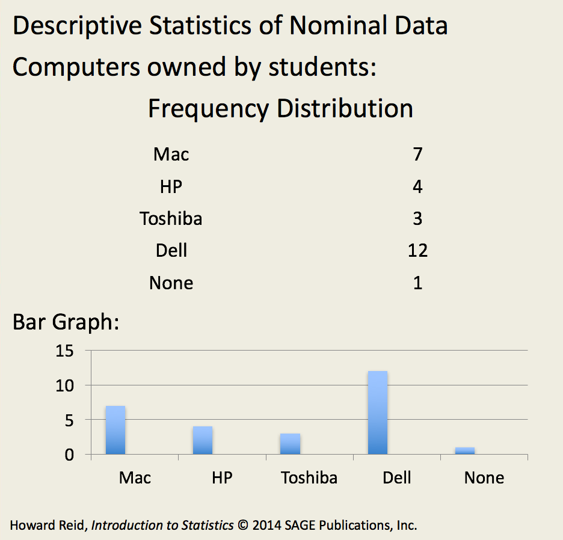
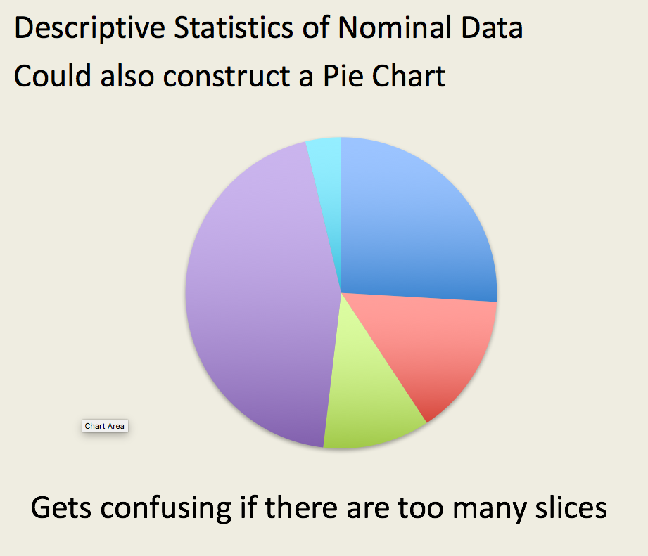

Home
About
Describing Nominal and Ordinal Data
Some possible descriptions of a data set.
Central tendency: mode, median, mean.
Variability: range, variance, mean deviation, standard deviation.
Shape: skew, kurtosis.
All Numbers Are Not Equal
Scales of Measurement
Nominal
- a number signifies a category
ex: 1 = male, 2 = female
Ordinal
- there is an order to the categories or events
ex: first, second, third
Interval
- the magnitude between events is known but there is no true '0'
ex: °F and °C
- can add and subtract
Ratio
- the magnitude between events is known and there is a true ‘0’
ex: height and weight
- can add, subtract, multiply and divide
Sometimes a number is just a name or a category
Nominal data
"chemistry major," "math major," "business major"
Any numbers assigned are just a code: no arithmetic significance. Can't subtract math major from chemistry major.
We can ask for the mode, the most common value.
The is no measure of variability.
Sometimes a number tells us the order of events
Ordinal data
She ranked 1st in our class; he ranked 15th, etc.
Or, he is the richest person in America.
Or, my team finished in seventh place.
We can ask for the mode, but also for the median, the middle value.
Range is a measure of the
spread
of ordinal data.
Sometimes we can add and subtract numbers
Interval data
Temperature is the best example: °90 is ° hotter than °45, but it is
not
twice as hot!
We can ask for the mean.
(Σ(all values)) / (number of values)
Some numbers can be multiplied and divided
Ratio data
We have a true zero: example, weight.
We can multiply and divide: 90 pounds
is
twice as heavy as 45 pounds.
Seeing Clearly with Nominal Data
It's time to begin learning to see better
Make a table of the number of items in each category.
This is a
frequency distribution
.
Example: Beings in the professor's house
Type of being
Frequency
Humans
4
Other mammals
1
Reptiles
1
"Las Cucarachas"
15
Demons, poltergeists, etc.
3
Using graphs and charts

Bar chart

Pie chart
Seeing Clearly with Ordinal Data
First, Second, Third: I see a pattern
Bar charts:
order
the bars!
We can add range as a measure of variability.
If our sample contains the 4th, 9th, 10th, 16th, and 42nd ranked student in our class, the range is 38.